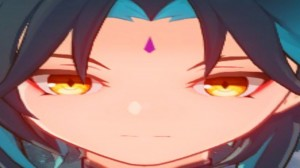

Сяо из игры Genshin Infarct
Сяо - мифическое существо (адепт), ему 2000 лет правда выглядит он на 12. Очень любит прыгать и есть снег и тофу. Дединсайдик.
Великие цитаты великих личностей
"Когда снег станет потолще, его можно будет есть..."
"Я сам должен положить мясо на лепёшку? А потом... всё вместе есть? Морока... Люди совсем уже здравый смысл потеряли."
Эти слова заставили меня многое переосмыслить......
Почему он мне нравится
Мне очень нравится этот персонаж потому что я тоже дединсайд у него ещё есть маска типа страшная у меня тоже есть страшная маска (анонимуса золотая) кароче этот персонаж тупо я
